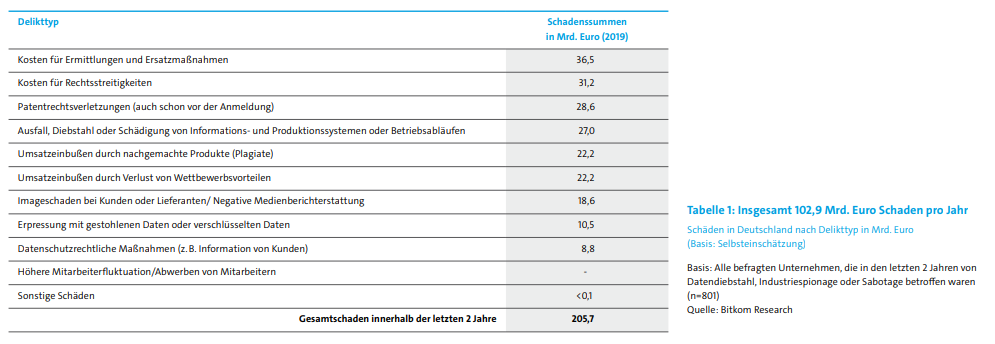

Bei der Berechnung von digitalen und analogen Schäden kommt man von einem Verlust in den letzten 2 Jahren von 205 Milliarden Euro, das heißt ca. 100 Milliarden Euro in Schäden jedes Jahr. Dies ist eine Verdopplung im Vergleich zum Jahr 2017 (55 Milliarden).
Am höchsten sind die Ausgaben der Ermittlung und die Ersatzmaßnahmen in Höhe von 36,5 Milliarden, gefolgt von Rechtsstreitigkeiten und Patentrechtsverletzung, jeweils 31,2 und 28,6 Milliarden Euro. Aber auch Diebstahl oder Schädigung von Informationen und Produktionssysteme, Betriebsabläufe richteten schaden in Höhe von 27 Milliarden. Zudem entstehen Schaden durch Wettbewerbsvorteilen 22,2 Milliarden, hinzukommt Erpressung mit gestohlenen und verschlüsselten Daten (10,5 Milliarden) und die Kosten für Datenrechtliche Schutzmaßnahmen lagen bei 8,8 Milliarden.
